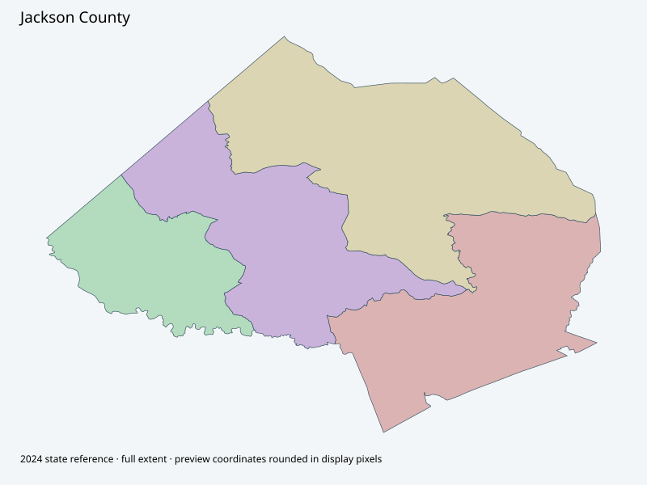

Map index · 4 explicit-FIPS 2024 map rows; 4 historical result identities. No approved crosswalk.

Full native coordinate/attribute extraction (gzip JSON) · Original complete statewide ZIP
Two original county PDFs retained:16 named old precincts and four consolidated zones, metadata2017; not evidence of current equivalence. Official-results peer foundFeb20,2026 final polling-place order, which is not a polygon/reporting crosswalk. Complete2024 state geometry is primary reference.
Full objects, county source IDs/clocks and attributes: all 2,701 native contexts. isVirtual:false and source label precinct do not prove physical geometry.
| Source name | Full source GUID | Breakdown ordinal | Source | Map status |
|---|---|---|---|---|
| Central Jackson | 01000000-d884-2e72-05a9-08dcda4bccd9 | 0 | 2024NovGen--jackson-county-ga | unreviewed / no approved map join |
| North Jackson | 01000000-d884-2e72-a23d-08dcda4bcce5 | 1 | 2024NovGen--jackson-county-ga | unreviewed / no approved map join |
| West Jackson | 01000000-d884-2e72-b986-08dcda4bccf1 | 2 | 2024NovGen--jackson-county-ga | unreviewed / no approved map join |
| South Jackson | 01000000-d884-2e72-57a6-08dcda4bccfd | 3 | 2024NovGen--jackson-county-ga | unreviewed / no approved map join |
| Original row ordinal | DISTRICT | PRECINCT_I | PRECINCT_N |
|---|---|---|---|
| 198 | 1574000 | 4000 | SOUTH JACKSON |
| 217 | 1573000 | 3000 | WEST JACKSON |
| 218 | 1571000 | 1000 | CENTRAL JACKSON |
| 231 | 1572000 | 2000 | NORTH JACKSON |